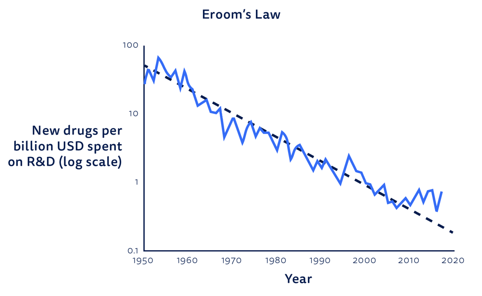

Most of the therapeutics available today consist of small-molecule-based drugs. These drugs primarily function by binding to specific pockets on target molecules, often proteins, either stimulating or inhibiting their activity. While small-molecule drugs are relatively easy to understand, develop, and administer, they have limitations in terms of complexity and functionality. Moreover, they face challenges when it comes to targeting "undruggable targets" – targets that have historically been identified as lacking well-defined binding pockets.
This assertion is further reinforced by EROOM's law, which stands as the inverse of Moore's law and highlights the declining productivity of the pharmaceutical industry. As the easily druggable targets have already been addressed, we are now confronted with the more challenging "undruggable targets." Developing a new drug for these targets currently requires over $2.5 billion and more than 10 years of intensive research and development.
(Image Taken from: https://www.benchling.com/blog/will-the-2020s-be-the-decade-of-life-science)
The fundamental challenge lies in our attempt to address intricate disease biology using relatively unsophisticated solutions, namely small molecule therapeutics. To illustrate this point through analogy, it's akin to building complex software using a basic calculator. While software development ultimately relies on sequential and combinatorial mathematical calculations that can be performed on a calculator, the calculator itself lacks the capacity to handle such advanced logic. In the realm of computing, we have evolved to develop generalized compute units like CPUs that are capable of executing complex logic.
Similarly, we need to transcend the limitations of primitive calculators, in this case, small molecule therapeutics, and instead focus on designing generalized biological compute units that can execute sophisticated logic. Fortunately, we have at our disposal highly capable bio-compute units known as proteins, which carry out a vast array of advanced tasks within our cells. Proteins possess the remarkable ability to intricately fold into specialized 3D structures and dynamically undergo conformational changes to perform highly complex functions. These tasks include precise DNA splicing, acting as ultra-specific binders (such as antibodies), transporting compounds within and outside cells, and participating in intricate signal transduction processes.
An important advantage of proteins is that they are composed of linear chains of 21 amino acids, and the specific sequence of these amino acids determines the protein's final structure and function. Furthermore, proteins naturally degrade into non-toxic amino acids, mitigating concerns regarding potential toxicity often associated with small molecule drugs.
While protein therapeutics are gaining popularity, they have not yet fully replaced small molecule drugs. Several factors contribute to this: Complexity: Proteins exhibit a high degree of complexity, making their modeling and manipulation challenging. Cost of production: Producing protein therapeutics is generally more expensive compared to small molecule drugs due to the complexities involved in their synthesis and purification. Immunogenicity: Protein therapeutics have the potential to elicit immune responses in patients, which can result in adverse effects and limit their efficacy.
The aforementioned challenges associated with protein therapeutics can largely be attributed to the difficulty in accurately modeling the intricate complexity of protein structure and function. However, there is now a growing belief that we have reached a crucial turning point, thanks to the advancements in machine learning algorithms that have attained the necessary power to capture these underlying complexities effectively.
In order to develop innovative protein therapeutics, it is essential to establish a robust and interchangeable understanding of the relationships between protein sequences, structures, and functions, with a primary focus on the former. The groundbreaking achievement of Alphafold2 showcased the remarkable accuracy with which a full 3D protein structure can be predicted solely from its protein sequence. However, we still lack an equivalently robust model that can accurately translate a given protein structure back into its corresponding protein sequence—an intriguing challenge known as the inverse folding problem.
The resolution of this inverse folding problem holds tremendous potential in revolutionizing the design and engineering of protein therapeutics. By successfully bridging the gap between protein structures and sequences, we can unlock the ability to precisely engineer proteins with desired properties and functions, paving the way for a new era of highly effective and tailored protein-based treatments.
Large Language Models (LLMs) appear as an enticing solution to tackle the inverse-folding problem in proteins. Proteins, being linear chains, can be represented as a language with 21 characters, making LLMs a potential candidate for modeling peptide language. However, achieving accurate modeling in this domain requires LLMs to possess a deep understanding of the underlying biochemistry of these complex molecular machines, beyond their proficiency in natural language tasks. Current auto-regressive LLMs, as acknowledged by Dr. Yann Lecun, Chief AI Scientist at Meta, lack the reasoning capabilities and world models necessary for accurate modeling.
We are actively working on actualizing this vision: JESPR (Joint Embedding Pre-training for Protein Structure-Sequence Representations). JESPR aims to learn universal protein representations by generating embeddings that closely resemble each other for both protein sequence and structure.
Another crucial objective is the incorporation of a latent variable in structural modeling. Latent variables enable the modeling of multiple output representations from a single input. Since different protein sequences can fold into the same structure, incorporating variability in generating outputs from a single input is essential for solving the inverse-folding problem. The success of GPT models is attributed, in part, to their strong pre-training objectives. For protein models, we believe that generating joint embeddings rather than relying solely on auto-regressive modeling serves as the optimal pre-training objective.
The primary pre-training task for JESPR involves a corpus of 200,000 experimentally validated structures from the protein data bank. Once successful, JESPR, either as a standalone model or in conjunction with AlphaFold, can establish a robust bidirectional pipeline between protein structure and sequence.
Furthermore, JESPR has the potential for repurposing in drug-target modeling. By providing the structural input of the target protein, JESPR can generate a sequence that would fold into a drug capable of binding to the target protein, expanding its applications beyond inverse folding.
Modeling protein structure and sequence alone is not sufficient to fully unlock the potential of a protein programming language. To achieve a comprehensive and functional protein programming language, two additional aspects must be integrated: modeling protein function and dynamics.
Modeling protein function and dynamics has been historically challenging due to limited data availability. World-model-based algorithms possess an advantage in generalizing with minimal data, and we speculate that during the pre-training process of JESPR, the model may acquire enough common sense to extend its understanding of protein function and dynamics.
Once this milestone is achieved, we will have the ability to express not only the structure of a target protein but also any desired logic we wish the protein to execute. For instance, we could instruct the creation of a functionally precise replica of DNA polymerase with an added telomerase function. Although this example may appear trivial, we firmly believe that the advancements achieved through these systems will enable us to tackle the most significant challenges in biology and medicine. One day this will cure cancer.